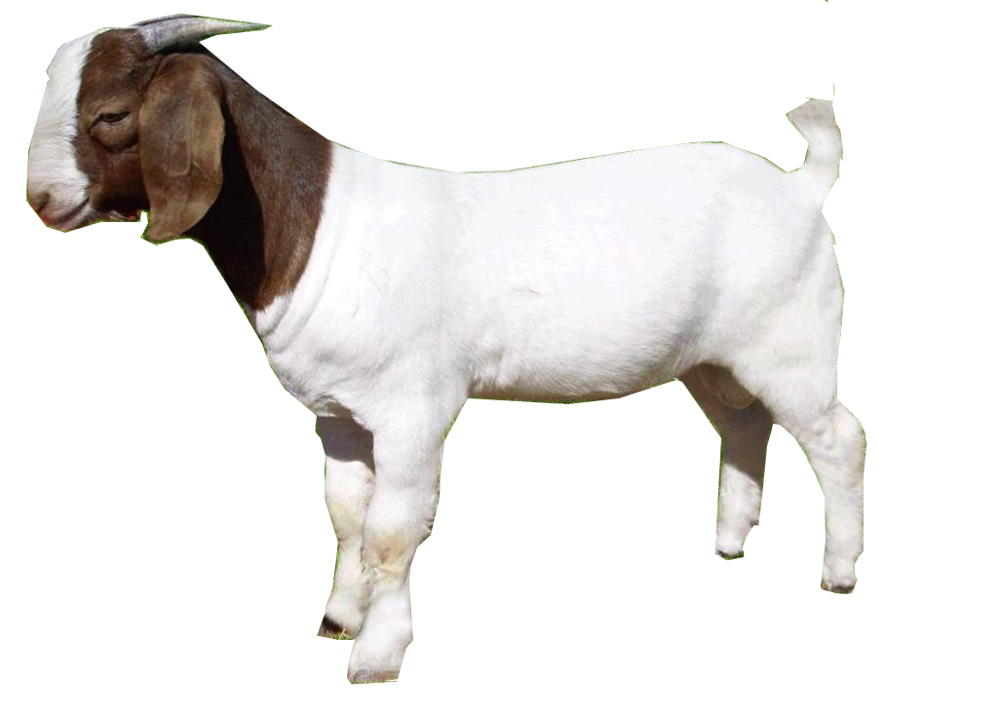
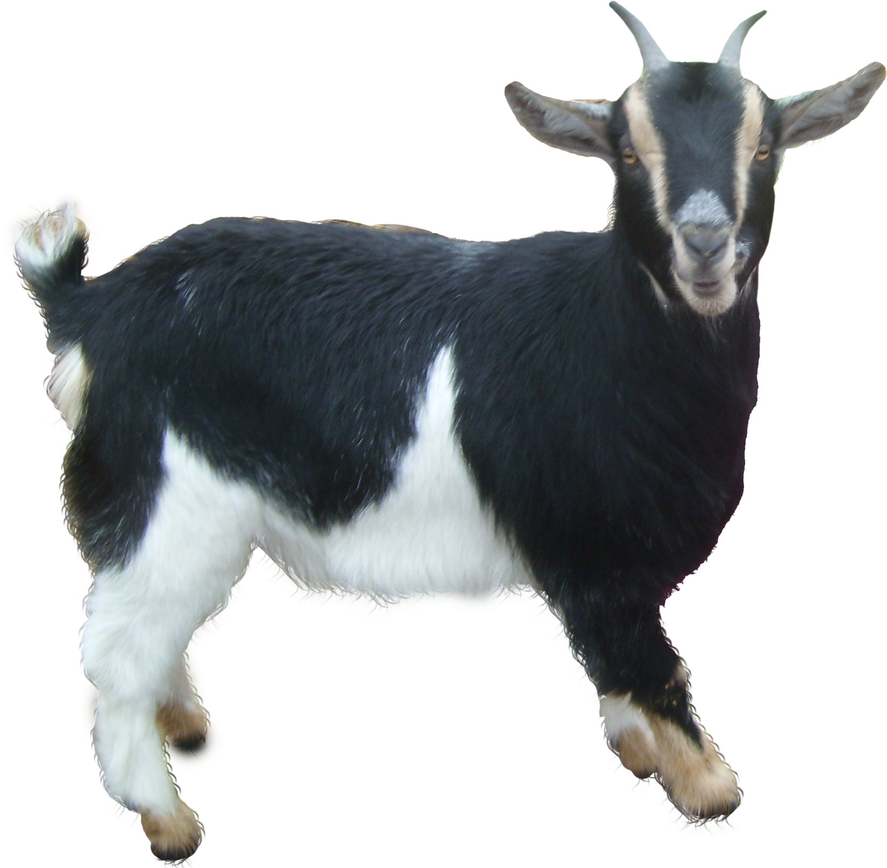
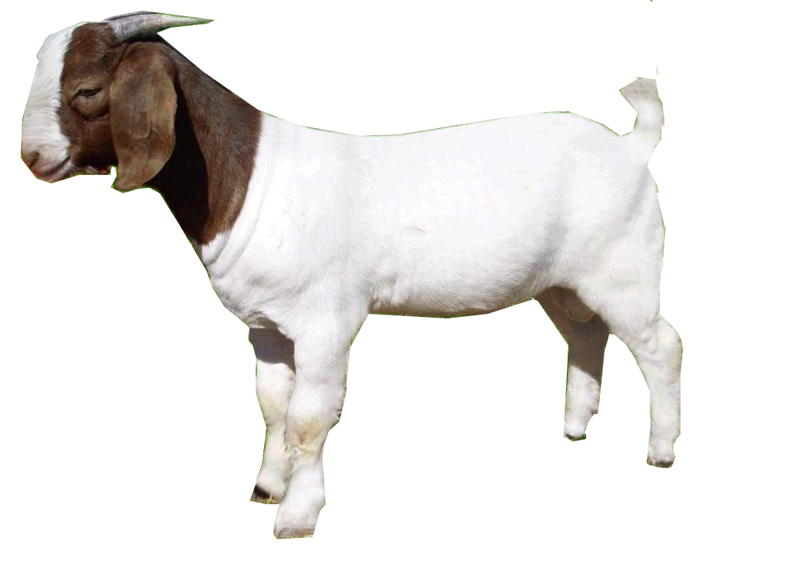
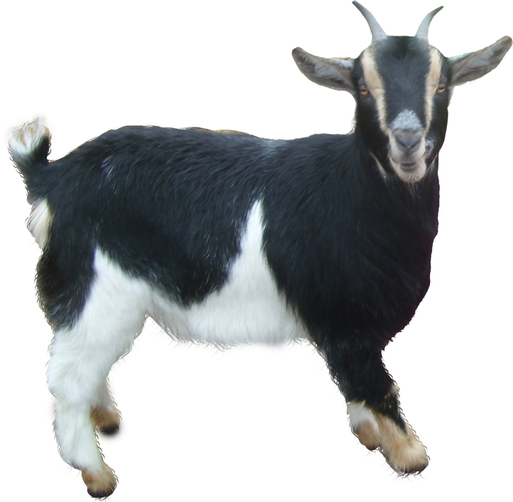

According to the Merriam-Webster Dictionary, a goat is any of various hollow-horned ruminant mammals (especially of the genus Capra) related to the sheep but of lighter build and with backwardly arching horns, a short tail, and usually straight hair. Goats are members of the Bovidae family, which also includes antelopes, cattle and sheep. Goats are very social creatures and live in groups called herds, which may contain as many as 20 goats in the wild. Goats are herbivores, which means they eat only vegetation. Their favorite food is grass, though mountain goats also eat mosses and plants. Many domestic goats will also eat trash, house plants or any other items they find lying around.